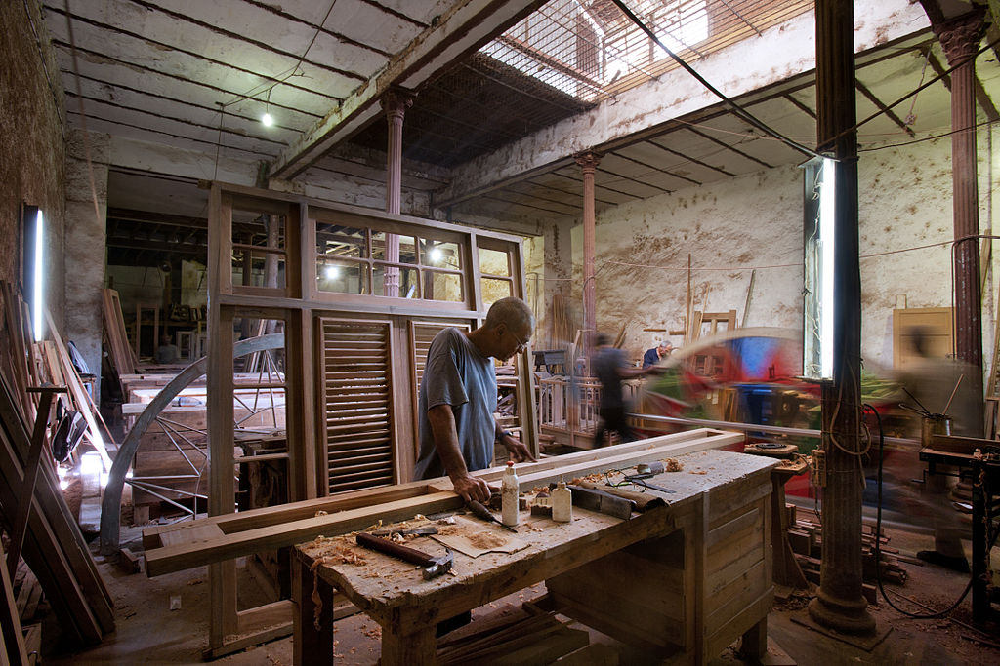

FICHAS
Ecologia
La ecología es una ciencia que bebe de la biología, la química, la geología, las matemáticas o la física.
Programacion
La programación es la actividad que se enfoca en organizar un conjunto de datos ordenados a seguir para ser ciertas cosas.
Calculo Diferencial
El cálculo diferencial es una parte del cálculo infinitesimal y del análisis matemático que estudia cómo cambian las funciones continuas según sus variables cambian de estado.
Carpinteria

La carpintería es el oficio de trabajar la madera para crear objetos útiles y agradables al ser humano.
Inglés
El idioma inglés es una lengua germánica occidental perteneciente a la familia de lenguas indoeuropeas, que surgió en los reinos anglosajones de Inglaterra y se extendió hasta el Norte en lo que se convertiría en el sudeste de Escocia, bajo la influencia del Reino de Northumbria.
Historia
La historia es la narración de los sucesos del pasado; generalmente los de la humanidad, aunque, también puede no estar centrada en el humano